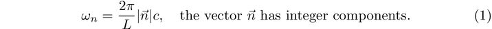
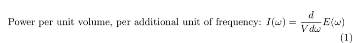
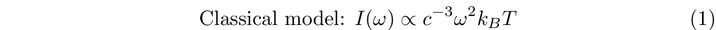
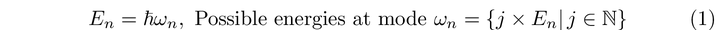
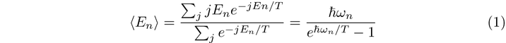
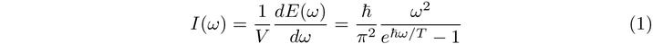

The-Ultraviolet-Catastrophe-b0155ffcb3af4d7bad92b5d6ea7488f1
Hi readers! I would like to credit this post to Benedict Goh, a physics student that I’ve been working with. He’s authored most of this article about blackbody radiation and the ultraviolet catastrophe. Enjoy!
In this post, I wanted to write about some of the problems in classical thermodynamics that motivated the idea of a ‘quanta’ of light, as well as some quantum field theory. The content in this article will be heavily base on the exposition in Schwartz. The problem I will write about is the ultraviolet catastrophe. I have continually found this problem to be quite confusing, and so I wanted to write about it from my perspective.
The Set-Up
Imagine a closed box with completely sealed walls. Let these sealed walls be perfectly reflective on the inside, like intense mirrors. Have you imagined it? Good. Now, poke a hole through one side of the box, and let energy come in. Now, let the energy flow in and wait. Eventually, the system settles in a state of ‘thermal equilibrium’. This means that energy throughout this box is evenly distributed. In this construction, the box will do two things. First, it will absorb light from the whole electromagnetic spectrum. Secondly, it will also emit light at varying frequencies as well. This construction is called a blackbody.
[image is not supported]
Inside a blackbody, there are electromagnetic waves being reflected against the walls. In the classical picture, these electromagnetic waves are governed by Maxwell’s equations. Since the box acts as a boundary in the x, y, and z directions, Maxwell’s equations dictate that these waves need to obey a set of boundary conditions at the wall, which puts a constraint on their frequencies. A detailed description of these boundary conditions is in [1]. In particular, the frequencies of these standing waves need to be such that an integer number of oscillations are in the box.

Light Intensity
There is a principle in classical thermodynamics called the equipartition theorem. In classical electromagnetism, light appears as a wave, and can have different frequencies. Light emitted at a specific frequency is called a mode.
The equipartition principle is a statement about what what intensity the blackbody can emit at a given mode. Specifically, it means that for each mode of light, a blackbody emits the same amount of light the same amount. Classically, there is no distinction between the emission of a high frequency mode of light, or a low-frequency mode of light. It means that the ‘density’ distribution of light with different modes is the same everywhere.
We can define this idea precisely below with an equation. The quantity below is the power emitted per unit emitting area, per unit of frequency. The letter E denotes power emitted, and the differential sign is meant to mean ‘per additional unit of frequency’. We then ask - how does the intensity change as we ramp up the energy? The problem with this is that the quantity grows quadratically at high frequency, causing a blow-up. This is not what is observed experimentally. The classical model can be derived using some simple dimensional analysis. Because we are looking at an inverse frequency, and inverse volume, the quantity in question should be proportional to the units of [E] [T] [V]^(-3). The expression in the classical model is our only option.


Unfortunately, this means that this intensity of light will ‘blow up’ as we get to high frequencies, which is not what we observe! In the next post, I’ll talk about some resolutions to this problem.
The Classical Model versus Experimental Observation
As mentioned before, a blackbody is a perfect absorber and thus also a perfect emitter of electromagnetic radiation at all frequencies. We claimed that, classically, the intensity of each mode the intensity to grow quadratically with the frequency. What happens in real life? Now, imagine that some researchers wanted to conduct an experiment to investigate the relationship between the frequency and the intensity of the radiation emitted by a blackbody.
Here’s what we can do to test this. Prepared a blackbody. They also have a detector that can detect both the frequency and intensity of any radiation that strike on its surface. They set up the experiment so that all the radiation emitted by the blackbody can be detected by their detector. During the experiment, there is also no other radiation beside the radiation emitted by the blackbody. After collecting all the experimental data, they plot a graph of radiation intensity detected by the detector against the frequency of the radiation emitted by the blackbody. The graph below shows the experimental relationship of intensity, versus the classical prediction. If they repeat the experiment by using a blackbody with higher temperature and plot the graph, the curve obtained will have a similar shape, but with a higher peak.
[image is not supported]
If they compare this experimental observation with the classical model which predict that the intensity of radiation will increase quadratically as the frequency increases, they will conclude that the classical theoretical prediction does not agree with the experimental results, especially when the frequencies are large. Hence, the attempt to use classical equipartition theorem to build a model for explaining the blackbody radiation spectrum was not successful.
Max Planck and his Postulate
Since October 1900, Max Planck started making attempt to explain the blackbody radiation problem that we see here. In one of the papers published, Planck’s constant was first introduced to the world. In Planck’s explanation for the black-body radiation spectrum, he made an important postulate. Classically, the energy was assumed to be continuous. However, he assumed that energy of each electromagnetic mode in the cavity is quantized and can only be emitted in integral multiples of a small unit of energy. This is expressed by the equation below, which involve Planck constant, h and ℏ=h/2π.

Planck is actually suggesting that the energy of electromagnetic waves is quantised. It cannot be divided into amounts smaller than a small fixed specific unit of energy. Since light is a type of electromagnetic waves, the postulate also means that light is quantised and is made up of particles which are known as photons nowadays. We can say that light is just like money as money is also quantised. If you have a one cent coin, you cannot reduce its value by breaking the coin into half or even more smaller pieces.
The Ultraviolet Catastrophe Problem Fixed
If Planck’s postulate is correct, then light is made up of photons with no mass. If light is quantized, then blackbody radiation can be explained, and the ultraviolet catastrophe can be fixed. Now, the thermal distribution can be calculated easily. If a mode with frequency n is excited j∈N times, the energy in the mode will be jEn=jn. The expectation value of energy in each mode can be written as below. The expectation value of an observable is the sum of the probabilities, multiplied by the outcome that occurs at that probability.

Note that β=1/kBT in the equation above. Finally, after some derivation, we will find that the light intensity, I as a function of angular frequency, that Planck used to match the measured data of the blackbody radiation can be expressed as below.

Thus, the ultraviolet catastrophe is now fixed and Max Planck become the first person in history to give a clear explanation for the black-body radiation spectrum.